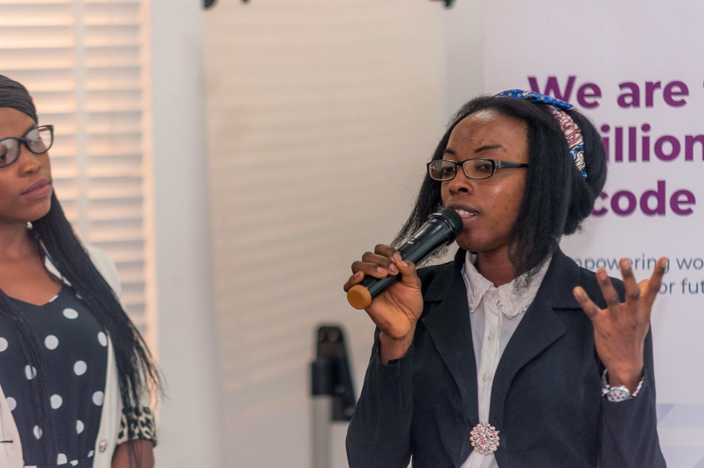

Back
Back
ALUMNI SPOTLIGHT: Gift O. Maduabuchi
| May 20, 2020


Your background? (upbringing, occupation/schooling)
I grew up in a Godly family. I am the only girl, surrounded by two lovely boys. I engage in male-dominated activities, such as playing football and playing computer games. After my Senior Secondary School, my parents enrolled me for computer training where I learnt Desktop Publishing. After that, I furthered my education at Ebonyi State University Abakaliki, where I obtained a Bachelors Degree of Science in Applied Biology in the year 2016.
Tell us your Tech4Dev Story: how & when did you get involved, what project?
I always had a passion for Tech, but I didn't have the opportunity to obtain a Computer Science certification from my Higher Institution. My drive has always been to provide solutions to real-life problems in my community. So, I started with developing myself, spending at least 2 hours a day coding. I was finding it difficult to understand some concepts and this made me search for a better approach. I searched the internet for Bootcamps and Cohorts until I stumbled on the Women Techsters Program and I quickly applied. To my astonishment, I was selected. My cohort started during December 2019 and I was happy to have such an experience in a practical aspect of coding. I worked with a team of women on a project and we built a website: " Storage Facilities" to enable perishable food items to be well monitored and preserved properly. I also carried out a personal project; I developed a website for teenage girls which will grant them the opportunity to build their careers in the tech sector.
What were the highlights of your Tech4Dev experience (your training period)?
1. The trainer was down to earth, he devoted his time to answer all my questions when I had difficulty in understanding. 2. I built a strong network with women that have goals that aligned with mine.
Volunteerism is a big part of Tech4Dev’s program. What are your memories of the trainers or people who delivered the program?
First of all, I will begin by appreciating Tech4Dev for providing a comfortable environment for learning, in a fully conditioned hall for two weeks. My Instructor, Mr Emma, was a jovial individual, he provided a variety of resources that still help me till date.
What opportunities have you gotten related to your training? (internship, programs)
I had the opportunity to attend an African Tech Conference "OSCAFEST" which was held in Lagos in March 2020. The event was really mind-blowing.
What are you doing currently? A brief of your work
Currently, I'm interning at TechSavvy HQ: an organization that is focused on Digital Branding. This has helped to improve my skills and is building me into a better developer.
What are your plans for the future?
I want to be a full stack developer, providing technological solutions to problems. I also want to impact young girls by educating them on the importance of the Tech sector (STEM).
How has the program helped you in getting into the role/opportunities you are in?
My training at Women Techsters exposed me to the fundamentals of coding and that foundation has given me the opportunity to intern at TechSavvy HQ.
How did the program influence your career path and you in general?
It gave me the opportunities to leave my comfort zone which pointed out the right path for me.
What advice would you give to other young women like yourself?
Follow your passion, don't let anything hinder you from achieving your set goals.